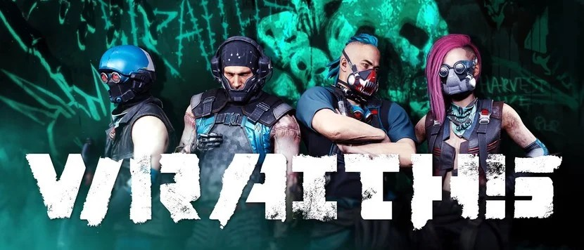
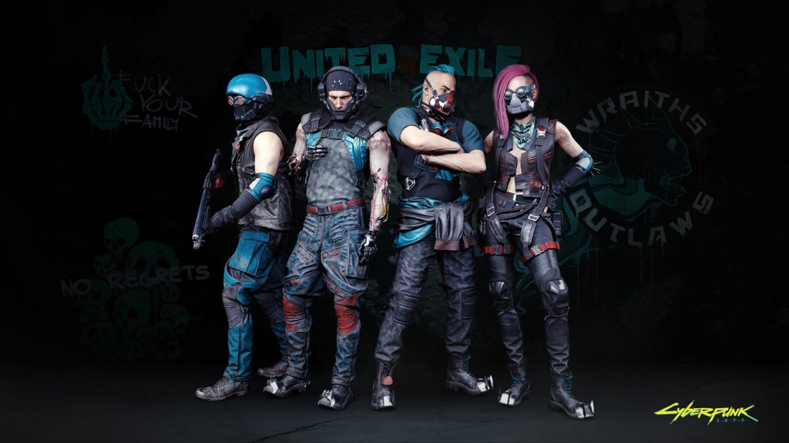

|  | |||||||||
| Anasayfa | Hayvanlar | Kaplan Pençeleri | Valentinolar | Voodoo Oğlanları | Maelstrom | Mox | 6. Cadde | Wraithler | Aldecaldolar |
| Wraithler, Raffen Shiv'in en büyük grubu, haydut Göçebelerdir. Bu grup çoğunlukla geceleri seyahat eder ve uykulu ve dikkatsiz davranışlar sergiler. Liderleri Köpek Katili olarak adlandırılır ve insan derisinden giysiler giydiği söylenir. Wraithler, Badlands'de yaşayan iki önemli Göçebe grubundan biridir. Diğer Göçebe grubu Aldecaldos ile savaşıyorlar. Uzun ve sık bir çatışma geçmişleri var. Wraith'lerin ayrıca, Badlands'de dolaştıkları 1000 beygir gücüne yakın Reaver diye adlandırdıkları bir araca sahip oldukları söylenmekte. Wraithler yasayı görmezden gelir. Saldırganlardır ve Night City'yi çevreleyen alanlara hükmederler. Küçük köylere baskın düzenlerler, küçük Göçebe gruplarına saldırırlar ve zayıf korunan şirket nakliye araçlarına saldırırlar. Çete tarafından kullanılan siber yazılım ve diğer ekipmanlar arasında refleks artırıcılar, ağrı düzenleyiciler, ağır şekilde modifiye edilmiş araçlar ve muhtemelen askeri sınıf ekipman yer alıyor. Wraith'lerin kökenleri bilinmemektedir. Bilinen şey, bunların Batı Kıyısında, muhtemelen Göçebe ülkelerin sürgünlerinden oluşan bir düzine Göçebe kökenli çetelenin birleşmesi ile oluştuğudur. Çetenin büyüklüğü bilinmiyor, ancak tahminen ortalama bir Göçebe klanının boyutunda, yaklaşık 300 ila 1.200 üye. Wraith'lerin ana gelir kaynağı, baskınlarından elde edilen ganimettir. Bazen ulaşım sözleşmeleri için büyük şehirlere giderler, ancak herkesin bildiği gibi güvenilmez paralı askerlerdir. Sık sık anlaşmaları bozarlar ve taşımalarını veya yolcularını fidye veya kendi zevkleri için almaları gereken ganimetleri için tutarlar.  |